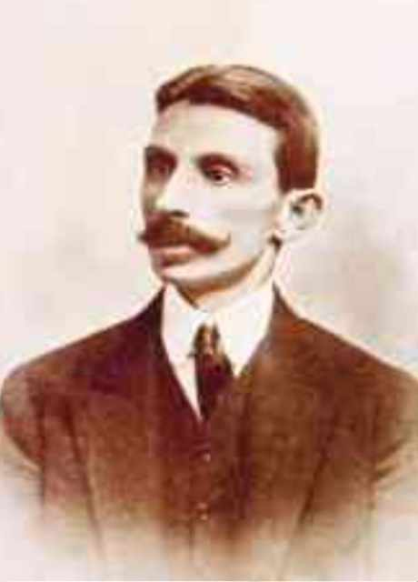

Euclides da Cunha
A prosa produzida no início do século XX
As obras mais significativas no estudo do período pré-modernista foram escritas por Euclides da Cunha, Lima Barreto e Monteiro Lobato. A leitura da obra desses autores permite examinar como cada uma das vertentes pré-modernistas dedicou-se à investigação social do Brasil do início do século XX.
Euclides da Cunha e o relato de um massacre
Depois de publicar dois artigos no jornal A Província de São Paulo, hoje conhecido como O Estado de S. Paulo, Euclides da Cunha foi chamado, pelo mesmo veículo, para cobrir o conflito de Canudos como repórter.

Euclides Rodrigues Pimenta da Cunha estudou engenharia na Escola Mi- litar da Praia Vermelha, no Rio de Janeiro (RJ). Defensor da República e fortemente marcado pe- lo Positivismo, foi com olhar determinista que primeiro observou os conflitos de Canudos, que originaram Os ser- tões, publicado em 1902. A obra foi recebida com entusiasmo pela crítica e levou o autor a ingres- sar na Academia Brasi- leira de Letras em 1903. Em 1909, foi nomeado professor de Lógica no Ginásio Nacional, atual Colégio Pedro II. No en- tanto, Euclides da Cunha não chegou a assumir o cargo, pois morreu nu- ma troca de tiros com Dilermando de Assis, amante de sua mulher.
Após o contato direto com a situação em que se encontravam os sertanejos, o relato de Euclides da Cunha apresentou uma mudança de perspectiva: o que seria uma reafirmação da necessidade de intervir duramente em Canudos trans- formou-se numa denúncia da injustiça e do abandono de uma região do país e de seu povo.
Conflito tem interpretações controversas
Da Redação
As razões para a Guerra de Canudos, no Sertão baiano, variam de acor- do com a interpretação dada aos documentos da época. Desde o final do século XIX, grupos sociais diversos a explicaram de maneiras diferentes.
Para os grandes proprietários da região, o líder Antônio Conselheiro in- centivava saques e invasões; para as autoridades republicanas, tratava-se de uma revolta monarquista; para cidadãos que acompanharam a campanha militar pelos jornais, tornou-se uma questão de honra.
Entre os historiadores surgiram variadas versões do Conselheiro, de ma- nipulador de uma seita milenarista a revolucionário socialista. Atualmente, tem sido identificado como um líder comunitário, de uma cidade sem ino- vações especialmente revolucionárias, que se tornou um bode expiatório da aristocracia.
O beato Antônio Conselheiro se estabeleceu na região, com centenas de seguidores, em 1893. A figura do Conselheiro é, por vezes, associada ao mes- sianismo, mas sobreviventes do conflito relataram que ele se apresentava apenas como um líder cristão leigo.
A República, instaurada em 1889, era ainda assimilada. A comunidade de Canudos, relativamente independente dos grandes proprietários da região, foi tachada de antirrepublicana por seus adversários. Uma das explicações para o nascimento do conflito foi a insatisfação de fazendeiros locais, que perdiam mão de obra barata, poucos anos depois do fim da escravidão, para o povoado de Canudos. […] Em 1896, um boato de que o Conselheiro planejava saquear comunidades vizinhas – ou cobrar à força uma dívida – ensejou a demonstração de poder por parte do Estado baiano. A primeira expedição – ou tentativa de restaurar a ordem – contra Canudos, liderada pelo tenente Pires Ferreira, foi derrotada.
Em janeiro de 1897, a segunda expedição, com centenas de homens sob o comando do major Febrônio de Brito, também fracassou. Canudos tornou- -se falada por todo o Brasil. Na terceira expedição, também malsucedida, morreu o comandante das tropas, o coronel Moreira César.
Popularizou-se a imagem, nunca referendada, de que o Conselheiro re- presentasse os interesses da princesa Isabel. Sob a bandeira de uma Repúbli- ca “ameaçada”, entre 6 mil e 10 mil soldados rumaram a Canudos na quarta expedição, a partir de junho de 1897. Calcula-se que fossem dez vezes mais numerosos que os combatentes canudenses.
Com uma estrutura de guerra que incluía artilharia e avanço de soldados em duas colunas, o conflito durou até 5 de outubro. No dia seguinte, a vila foi incendiada.
VISÕES de Canudos. Folha de S.Paulo, São Paulo, 2 ago. 2009. Caderno Mais. Disponível em: <www1.folha.uol.com.br/fsp/mais/fs0208200917.htm>. Acesso em: 6 abr. 2016.
Com o fim da Guerra de Canudos, Euclides da Cunha retomou seu trabalho como engenheiro e organizou suas notas e seus estudos para a escrita do livro Os sertões, publicado em 1902.
A obra, que apresentou uma inovação de estilo nas letras brasileiras, divide-se em três partes: “A terra”, “O homem” e “A luta”. Na primeira, o autor estabe- lece um estudo de base geográfica, em que retrata as marcas climáticas, de relevo e de vegetação do Sertão nordestino. Na segunda, o homem, o sertanejo, é o foco. Por meio de descrições do tipo físico do homem do sertão, bem como de suas características de personalidade e de adaptação ao meio, o autor tenta apresentar ao homem litorâneo, especialmente o do Centro-Sul e do Sudeste brasileiro, esse personagem praticamente desconhecido. Se, inicialmente, essa descrição se dá de modo quase estereotipado, ao longo da obra o sertanejo emerge como um herói resistente.
O sertanejo é, antes de tudo, um forte. Não tem o raquitismo exaustivo dos mestiços neurastênicos1 do litoral.
1 neurastênicos: indivíduos mal-humorados, irritáveis, irascíveis.
A sua aparência, entretanto, ao primeiro lance de vista revela o contrário. Falta-lhe a plástica impecável, o desempeno2, a estrutura corretíssima das organizações atléticas.
2 desempeno: elegância.
É desgracioso, desengonçado, torto. Hércules-Quasímodo3, reflete no as- pecto a fealdade típica dos fracos. O andar sem firmeza, sem aprumo, quase gingante4 e sinuoso, aparenta a translação de membros desarticulados. Agra- va-o a postura normalmente abatida, num manifestar de displicência que lhe dá um caráter de humildade deprimente. […]
3 Hércules-Quasímodo: referência aos dois personagens antíteses: Hércules, o principal herói da mitologia grega, filho de Zeus e da mortal Alcmena; e Quasímodo, o Corcunda de Notre-Dame, personagem do romance Notre-Dame de Paris, de Victor Hugo, publicado em 1831.
4 gingante: inclinado; que se inclina de um lado para outro, ao andar.
É um homem permanentemente fatigado.
Reflete a preguiça invencível, a atonia5 muscular perene6, em tudo: na palavra remorada7, no gesto contrafeito, no andar desaprumado, na cadência langorosa8 das modinhas, na tendência constante à imobilidade e à quietude.
5 atonia: debilidade, fraqueza.
6 perene: que não acaba, incessante.
7 remorada: demorada, retardada, delongada.
8 langorosa: sem energia, frouxa, fraca, debilitada, lânguida.
Entretanto, toda esta aparência de cansaço ilude.
Nada é mais surpreendedor do que vê-la desaparecer de improviso. Na- quela organização combalida operam-se, em segundos, transmutações com- pletas. Basta o aparecimento de qualquer incidente exigindo-lhe o desenca- dear das energias adormidas9. O homem transfigura-se. Empertiga-se10; […] e corrigem-se-lhe, prestes, numa descarga nervosa instantânea, todos os efei- tos do relaxamento habitual dos órgãos; e da figura vulgar do tabaréu11 canhestro12, reponta inesperadamente o aspecto dominador de um titã aco- breado e potente, num desdobramento surpreendente de força e agilidade extraordinárias.
9 adormidas: adormecidas.
10 empertigar-se: endireitar-se, aprumar-se, tomar ares altivos.
11 tabaréu: caipira.
12 canhestro: desajeitado, desengonçado.
CUNHA, Euclides da. Os sertões. São Paulo: Cultrix, 1975. p. 99-100.
A terceira parte de Os sertões focaliza a luta propriamente dita que foi tra- vada entre os habitantes de Canudos e as tropas republicanas. O escritor, que chegou carregado de determinismos científicos, rendeu-se ao apelo humano das batalhas presenciadas, retrato de uma realidade concreta e violenta, a qual ele se empenhou em denunciar.